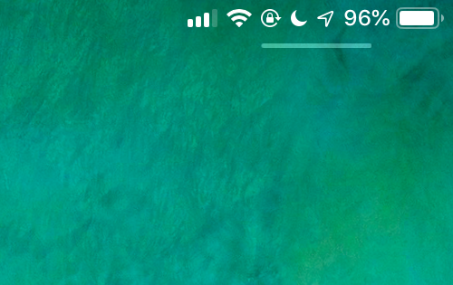
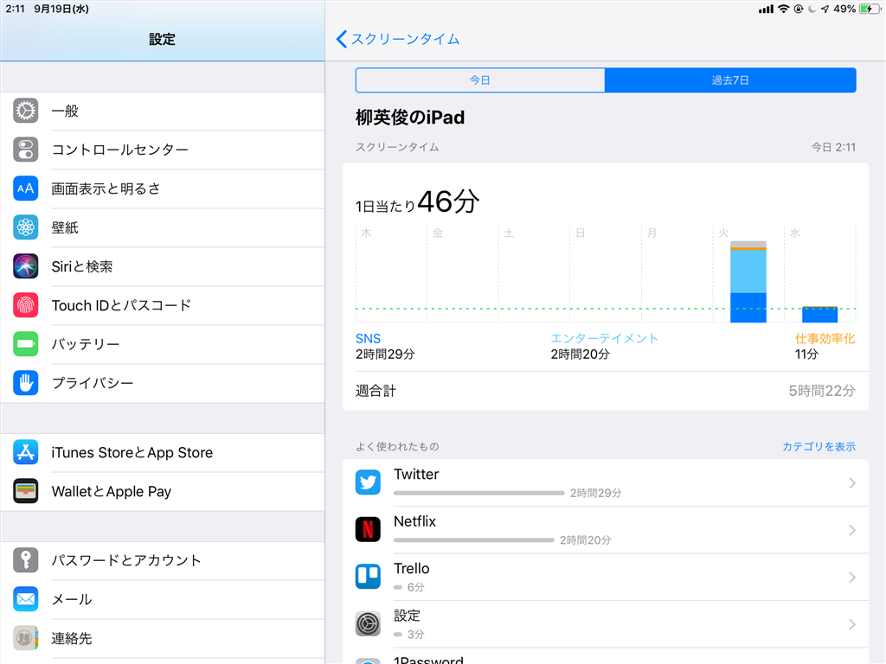

iOS 12 にアップデートしてみました
公開日：

昨日の朝3時ごろ、ちょっと仕事をしながらガチャガチャと iPad mini 4 をいじってると、iOS 12 が降ってきた。早速導入してみた。
新機能うんぬんは他所でどうぞ。うちは自分が気が付いたことだけ。
iPad mini 4 でアプリが機能しなくなった
再起動で解決。動作は早くなったらしいけど、体感はないかな……ま、遅くなってなけりゃ別に。
コントロール センターがでない？
iPad mini 4 でコントロール センターがでない。一瞬「廃止されたのか？」と思ったけど（そんな馬鹿な！ こんなダサい機能を Apple が廃止するわけがない！！）、iPhone の方は普通に出せる。
理由は簡単で、自分が情弱なだけだった。
右上の方をスワイプしなきゃいけないんだな。前からこうだったっけ……最近、タイプミスは増えるわ、シソーラスを引く機会は増えるわ、老いを感じることが多くなってきた。

この謎のバーが以前からあったのかどうかも記憶が定かではないんだけど、もしかしたらコントロール センターのためのアフォーダンス（← だっけ？）なのかな？ いつもかならずあるわけじゃないみたいだけど、これからコントロール センターを使うときはここんところを引っ張るようにしてみる。

OneDrive の写真同期でフォルダー構造が変わった

iPhone の写真は OneDrive アプリでクラウドと同期しているのだろうけど、カメラロール フォルダーへフラットに展開されるのではなく、年月日でフォルダーわけされるようになった。一覧性は低下するけど、大量の写真がある場合のファイルブラウジングパフォーマンスは若干改善される。
もっとも、この変更が iOS 12 によるものなのか、OneDrive のアップデートによるものなのかは知らない。たまたまタイミングがかぶっただけかもしれないが、手元にはもう iOS 11 端末がないので検証できない。
気に入った新機能

利用統計機能 スクリーンタイム はかなり気に入った。1日で2時間も Twitter してたとか、マジでヤバい。

あと、目立たない形で配信っていう機能も気に入ったかな。おもに Kindle Unlimited の通知消すために使いたい（
watchOS 5
@daruyanagi pic.twitter.com/TMhPLP1mnp
— しばやん (@shibayan) September 18, 2018
これは面倒くさいので明日やる。いま OS のアップデート中……